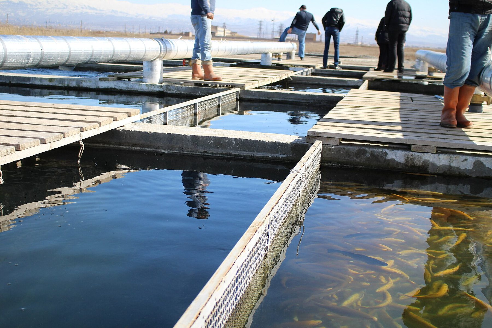
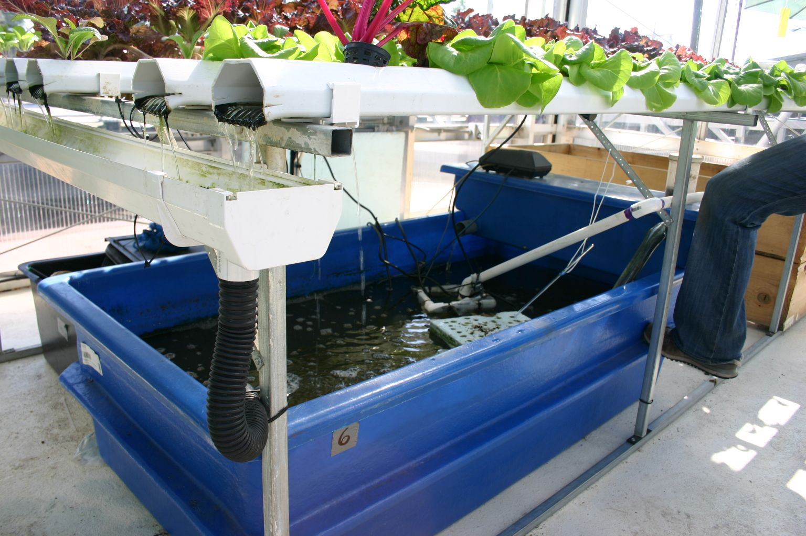
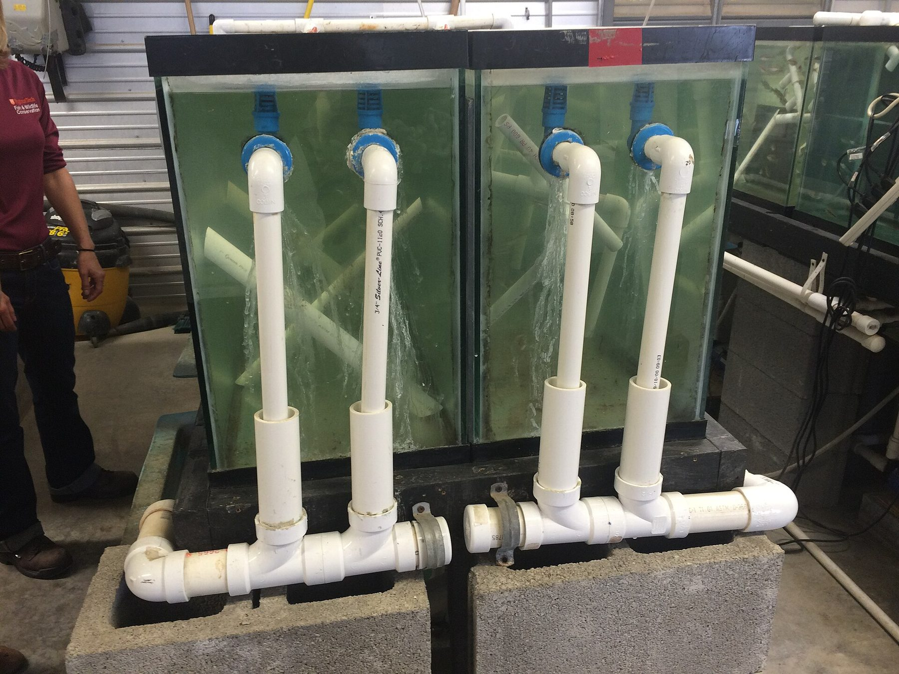

Home / Blog
Notes
Ten notes on recirculating practice.
Short technical essays for farms, researchers, and public agencies interested in recirculating practice, written conservatively and without invented case studies. The author line is the PanPan Aqua editorial desk, not a fictional personal byline.

What recirculating aquaculture is, and why water-scarce regions use it
A conservative introduction to RAS loops, water reuse, and the limits of energy, skill, and scale, written for buyers who may later visit a demonstration workshop in Nansha.

Water quality in RAS: ammonia, nitrite, dissolved oxygen, temperature, and daily practice
How a recirculating workshop watches the numbers that keep fish alive, and how a log and a management platform support — but do not replace — daily husbandry.
Fish health and early detection: the role of microscopy
Why recirculating systems need early health work, what a microscope can show, and how Qiuhao 5 and 8 were publicly presented — with company-stated figures clearly labelled.

Tailwater treatment and nutrient recovery
Recirculating farms still discharge solids and a concentrated effluent. A look at capture, treatment, recovery, and the 2025 Nansha tailwater tender, read as a project-owner document.

Pond-relay aquaculture: combining indoor RAS with outdoor ponds
How farms move fish between a controlled indoor stage and ponds, why the transfer is the hard part, and how to look at the practice in Nansha without mis-captioning the landscape.

What a buyer should look for when visiting a demonstration RAS workshop
A practical briefing for a first walk through the Nansha workshop: the loop, the logs, the alarms, the unglamorous corners, and how to leave without false certainty.

Energy, biosecurity, and operating costs — practical questions before investing
Electricity that never sleeps, the habits that keep pathogens out, and the first-year costs that a brochure often omits, framed as questions for a visit rather than as invented figures.

Warm-water species in RAS, including mandarin fish as a research context
How heat changes oxygen, feed, and health work in a recirculating loop, and why mandarin fish (Siniperca / 鳜鱼) appears in a 2024 Nansha research tender — not as a guaranteed export SKU.

Digital fishery management platforms: what they can and cannot do
Logs, alerts, and modest analysis can support a workshop. They cannot replace a technician, a calibrated probe, or night staff. The WeChat mini-program is described as a China offering only.

First questions for a Gulf or Southeast Asian buyer considering a visit to Nansha
A list of questions — about water, energy, species, labour, and honesty of reporting — so that a first trip compares two real places and does not invent a completed overseas project.